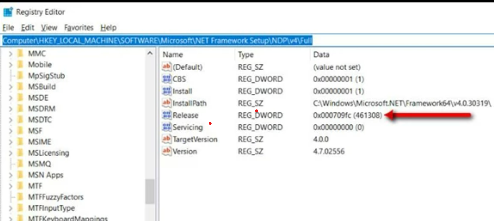
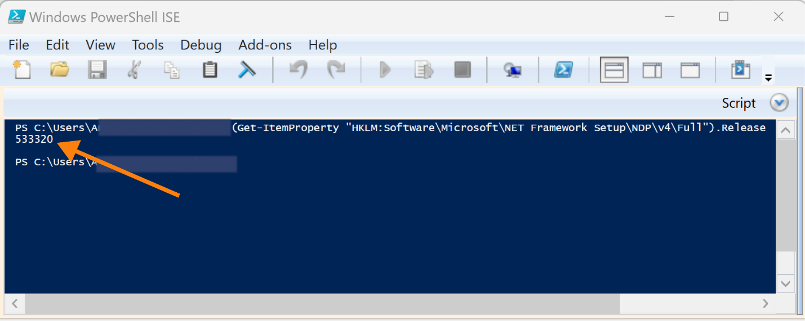

Question
How can I determine the version of .NET Framework installed on my system?
Answer
Netwrix Change Tracker Gen 7 Hub and Agent require a specific version of .NET Framework. This article provides instructions to help you determine which version of .NET Framework is installed on your system.
Option 1: Check in the Windows Registry
- Press Windows Key+R to open the Run command box.
- Type regedit and click OK.
-
Navigate to the following registry key:
HKEY_LOCAL_MACHINE\SOFTWARE\Microsoft\NET Framework Setup\NDP\v4\Full. -
Locate the Release DWORD value. Refer to the screenshot below for
guidance:

Option 2: Use Windows PowerShell ISE
- Open Windows PowerShell ISE.
-
Enter the following command:
(Get-ItemProperty "HKLM:Software\Microsoft\NET Framework Setup\NDP\v4\Full").Release
-
The output will display the Release number of the installed .NET
Framework version. Refer to the screenshot below for an example:
 - To determine the corresponding .NET Framework version, refer to the official Microsoft documentation: .NET Framework Versions and Dependencies: Version Information ⸱ Microsoft 🡥
Related Articles
- How to Backup / Restore / Move Your MongoDB Database
- Monitoring Oracle Databases Using Change Tracker
- How to Configure the FAST Cloud Integration with Proxy Internet Settings
- How to Move Your Linux Server MongoDB Database to a Windows Server
- How to Add a Palo Alto Device to a Proxy Agent as a Proxy Device in Change Tracker Gen 7